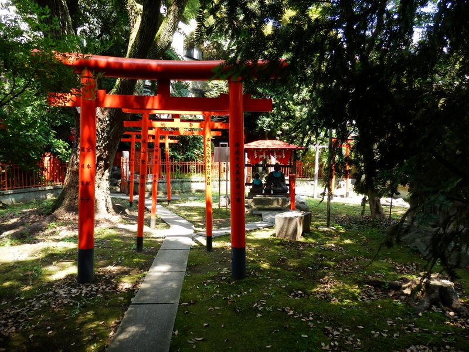
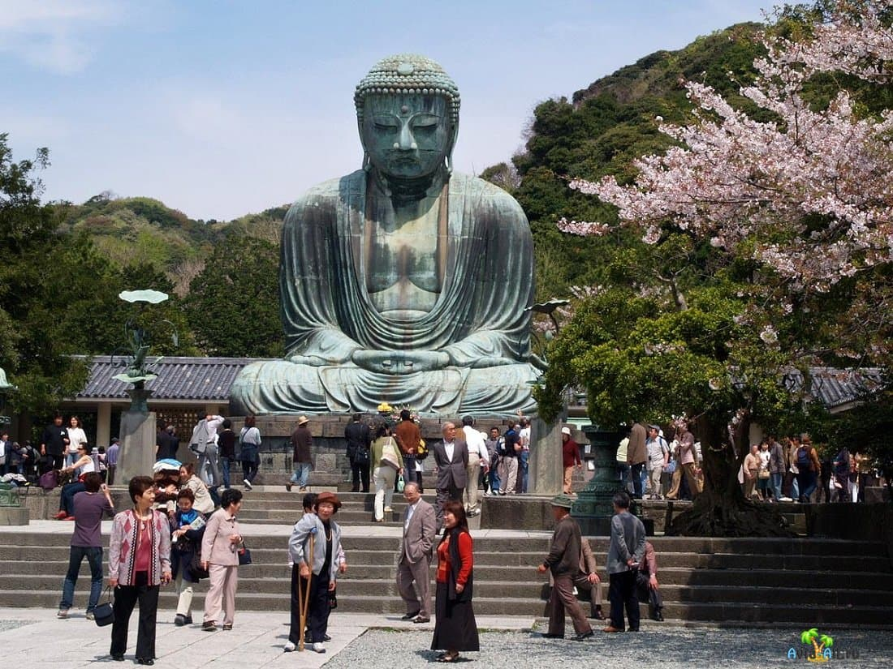
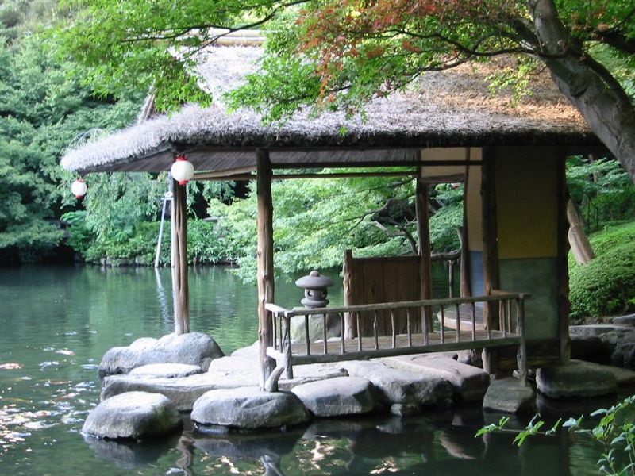
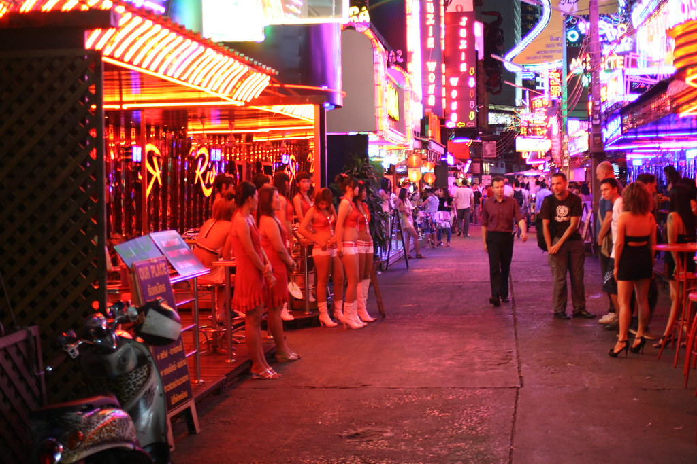
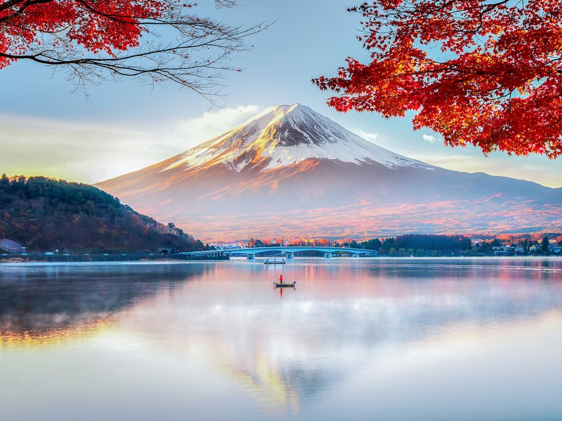
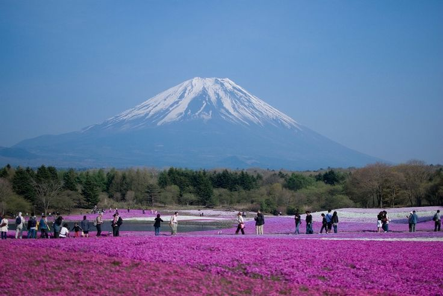

Наш топ 3 самых популярных экскурсий:
- Прогулка по Токийскому нижнему городу
- Влюбиться в Камакуру: по столице самураев с местным жителем
- Очарование южного Токио
Записаться на экскурсию:
|  |  |  |
Прогулка по Токийскому нижнему городу Синтоистские святилища, аутентичные ресторанчики и погружение в повседневную жизнь Токио |
Влюбиться в Камакуру: по столице самураев с местным жителем Перенестись в Японию 12 века, посетить старинные буддистские храмы и пройти по следам сёгунов |
Очарование южного Токио Старинные храмы, живописный японский сад, чайная церемония и модный район Сибуя за один день |
| Длительность 3 часа | Длительность 2,5 часа | Длительность 3,5 часа |
| Стоимость € 200 | Стоимость € 170 | Стоимость € 170 |
|  |  |  |
Блеск и изнанка района Синдзюку Передовой дизайн, архитектура и самый злачный квартал Токио — в одной экскурсии |
Путешествие к подножию Фудзиямы Погрузиться в культуру Японии и покориться ее красоте на экскурсии из Токио к озеру Кавагутико |
Путешествие в национальный парк Фудзи-Хаконе-Идзу На автомобиле, кораблике и канатной дороге по самым живописным местам региона |
| Длительность 2,5 часа | Длительность 4 часа | Длительность 6 часов |
| Стоимость € 290 | Стоимость € 365 | Стоимость € 270 |